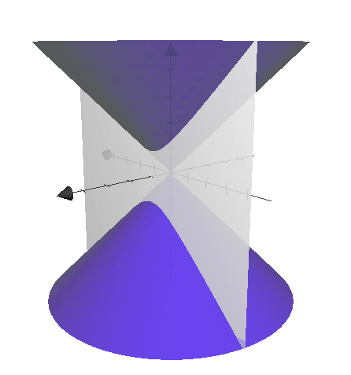
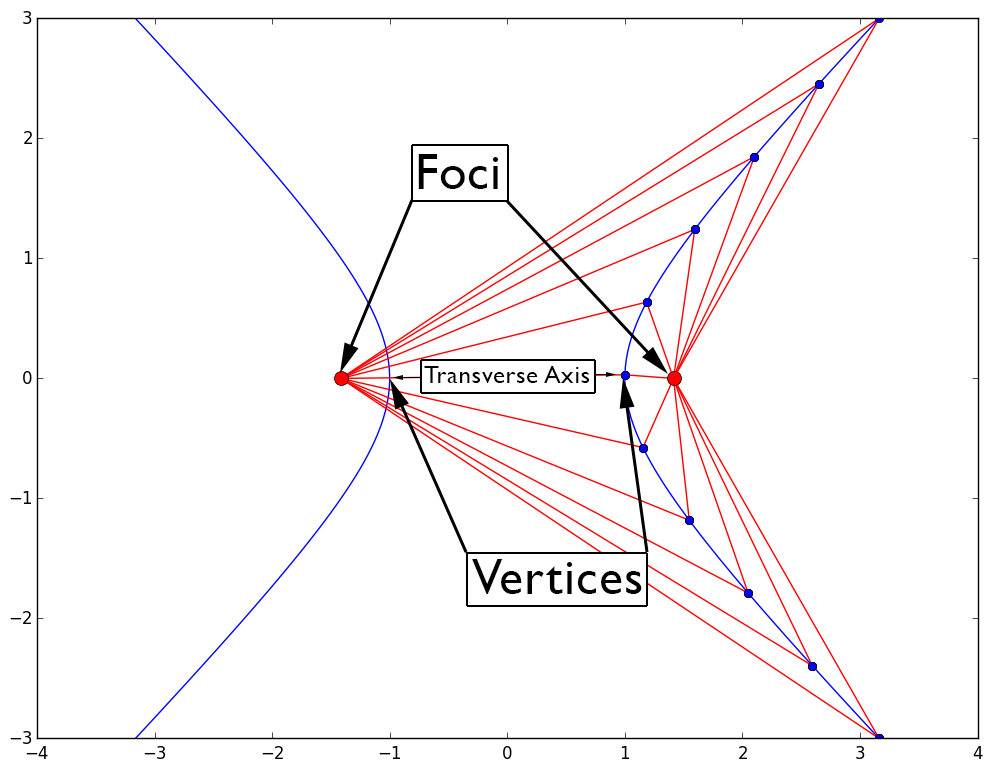
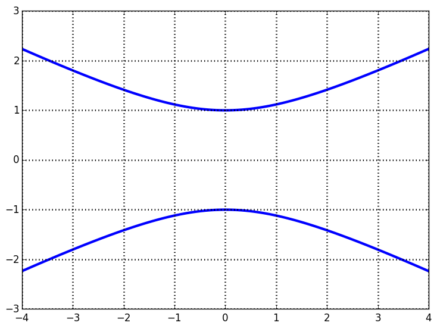

| « 9.3 | up | 10.1 » |
9.4 — The Hyperbola

A hyperbola is the intersection of a plane and a conic as shown above. In the x-y plane, it is defined as the set of all points whose difference of distances from two fixed points called the foci yield a constant value.

Equations and such
As with parabolas and ellipses, we will only consider the cases when a hyperbolas opens up/down and left/right.
|
|
Determine the foci of the hyperbola given by $\displaystyle \frac{(y-5)^2}{36} - \frac{(x-3)^2}{13} = 1$
$(3,5\pm 7)$
Determine the equation of the hyperbola with center at $(0,0)$, focus at $(0,8)$, and vertex at $(0,5)$.
$\displaystyle \frac{y^2}{25} - \frac{x^2}{39} = 1$
Determine the asymptotes of the hyperbola given by $\frac{x^2}{9}-\frac{y^2}{1} = 1$.
$y = \pm \frac{1}{3}x$
Find the vertices of the hyperbola given by $\displaystyle \frac{(y-2)^2}{4} - \frac{(x-8)^2}{21} = 1$.
$(8, 2 \pm 2)$
Select the equation that best describes the following graph:

- $\displaystyle \frac{y^2}{1} - \frac{x^2}{4} = 1$
- $\displaystyle \frac{x^2}{1} - \frac{y^2}{4} = 1$
- $\displaystyle \frac{x^2}{4} - \frac{x^2}{1} = 1$
- $\displaystyle \frac{y^2}{4} - \frac{y^2}{1} = 1$
Option 1
Sketch the graph of $\displaystyle \frac{x^2}{16} - \frac{y^2}{36} = 1$
General Formula for a Conic
Any conic can be written as: $$ Ax^2 + Bxy + Cy^2 + Dx + Ey + F = 0 $$- If $AC = 0$, the equation describes a parabola.
- If $AC \gt 0$, the equation describes an ellipse.
- If $AC \lt 0$, the equation describes a hyperbola.
Completing the Square
When confronted with a general form conic equation, we can complete the square in $x$, $y$, or both to put the expression into standard form. Once in standard form, we can deduce all the familiar properties of the particular conic.
Describe the following equation: $x^2 - y^2 -2x - 2y = 1$
Hyperbola with center at $(1,-1)$, foci at $(1\pm \sqrt{2}, -1)$, and vertices at $(1\pm 1,-1)$.
Describe the following equation: $4x^2 + y^2 + 8x -4y = 0$
Ellipse with center $(-1,2)$, vertices at $(-1,2\pm 2)$, and foci at $(-1,2\pm \sqrt{3})$.
Describe the following equation: $y^2 - 4y - 4x^2 + 8x = 4$
Hyperbola with center $(1,2)$, vertices at $(1,2\pm 2)$, and foci at $(1,2\pm \sqrt{5})$.
Describe the following equation: $125x - 50y^2 +123 - 20y = 0$
Parabola that opens to the right with vertex at $(-1,-1/5)$.